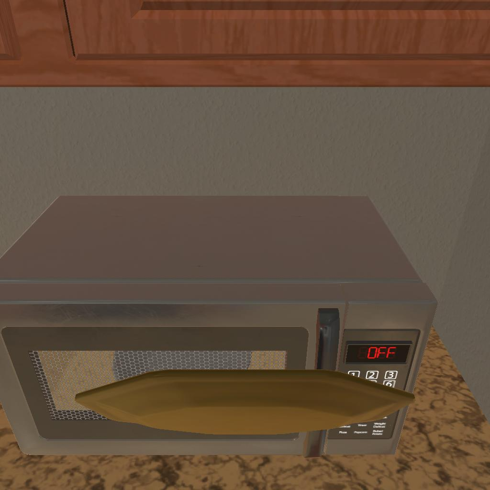

---------------------------------------------------------task: 23---------------------------------------------------------
--------------------------------------------------------------------------------------------------------------------------------------------------------------------
--------------------------------------------------------------------------------------------------------------------------------------------------------------------
Step:--------------------------------------------------------------------------4-------------------------------------------------------------------------------
----------------------------------------
VLM Prompt:
**Task**
Please perform as an embodied AI agent. Our final objective is to put a hot mug in coffeemachine. Below is the plan for completing the task, the current observation, alongside historical data and admissible actions for the next step. Please determine the best action for the next step!
**Plan**
Below is a detailed step-by-step plan to complete the task.
1. Find a mug.
2. Pick up the mug.
3. Find a microwave.
4. Heat the mug with the microwave.
5. Find a coffee machine.
6. Place the heated mug in the coffee machine.
**Current Observation**
Displayed is an image capturing the current position of the agent.
**History Information**
Displayed are the previous observations with their corresponding actions.
Current State 1:
1. Place: Kitchen
2. Step Index in Plan: 1
3. Objects: Coffee machine, countertop, cabinet 1
4. Action: Go to cabinet 1
Current State 2:
1. Place: Kitchen, at cabinet 1
2. Step Index in Plan: 1
3. Objects: Cabinet 1, mug
4. Action: Open cabinet 1
Current State 3:
1. Place: Kitchen, at cabinet 1
2. Step Index in Plan: 1
3. Objects: Mug
4. Action: Take mug from cabinet 1
Current State 4:
1. Place: Inside an empty cabinet
2. Step Index in Plan: 3
3. Objects: Mug
4. Action: Go to microwave 1
**Admissible Actions**
(1): go to cabinet 1
(2): go to cabinet 2
(3): go to cabinet 3
(4): go to fridge 1
(5): go to countertop 1
(6): go to cabinet 4
(7): go to cabinet 5
(8): go to cabinet 6
(9): go to cabinet 7
(10): go to drawer 1
(11): go to drawer 2
(12): go to cabinet 8
(13): go to drawer 3
(14): go to cabinet 9
(15): go to cabinet 10
(16): go to drawer 4
(17): go to cabinet 11
(18): go to toaster 1
(19): go to cabinet 12
(20): go to cabinet 13
(21): go to cabinet 14
(22): go to cabinet 15
(23): go to countertop 2
(24): go to coffeemachine 1
(25): go to garbagecan 1
(26): go to countertop 3
(27): go to countertop 4
(28): go to sink 1
(29): go to stoveburner 1
(30): go to stoveburner 2
(31): go to stoveburner 3
(32): go to sinkbasin 1
(33): open microwave 1
(34): close microwave 1
(35): put plate 1 in/on microwave 1
(36): heat plate 1 with microwave 1
(37): examine plate 1
**Analysis Guideline**
1. Analyze the **History Information** and determine our current step in the plan and our current place.
2. List all visible objects related to the task in the current observation.
3. Analyze the objects in the current observation based on the history and the requirements for the current step, and then determine if we can complete the step with the current observation.
4. Analyze and decide on the most appropriate action to take.
5. Summarize the analysis using the following format: "Analysis: [The summarization of the analysis], The Most Appropriate Action: (i which is the integer.): [Selected action]"
**Notes**
1. We must complete each step of the plan in order and cannot skip steps when the previous ones are not finished.
2. For "Go to" actions listed as "go to xxx [n]", interpret this as there are n distinct actions available: "go to xxx 1", "go to xxx 2", ..., "go to xxx n". Select one specific action from these options instead of using "go to xxx [n]".
3. If receptacles such as drawers, cabinets, and so forth are closed in the current observation, we may try to open them.
4. Pay attention to synonyms and ensure clarity in the terms used.
5. If there is no history available, we are at the first step and the current place is "Unknown".
6. The most appropriate action must be in the **Admissible Actions**, and we cannot generate a new action that is not in the **Admissible Actions**.
**Answer**
Please select the most suitable action by following the **Analysis Guideline**, keeping the above **Notes** in mind.
----------------------------------------
----------------------------------------
VLM Response:
Analysis: According to the History Information, the current step in the plan is step 4: Heat the mug with the microwave. The agent is currently in front of microwave 1 with a mug in hand. The current observation shows the microwave with its door closed and turned off, which indicates that the mug has not been heated yet. The admissible actions do not include picking up the mug because it has already been picked up in a previous step. The next logical action is to open the microwave, place the mug inside, and then use the microwave to heat the mug. The "open microwave 1" action (33) is the next appropriate action as it allows us to progress to the next step of placing the mug inside.
The Most Appropriate Action: (33): open microwave 1.
----------------------------------------
----------------------------------------
>>> Refine VLM Response and Get Pure Action: open microwave 1
----------------------------------------
-----------------------------------------------------------------
Running time: 11.708397388458252 seconds
Total Money: 11.371059999999998
-----------------------------------------------------------------
-----------------------------------------------------------------
Summarization Prompt:
**Context**
Analysis: According to the History Information, the current step in the plan is step 4: Heat the mug with the microwave. The agent is currently in front of microwave 1 with a mug in hand. The current observation shows the microwave with its door closed and turned off, which indicates that the mug has not been heated yet. The admissible actions do not include picking up the mug because it has already been picked up in a previous step. The next logical action is to open the microwave, place the mug inside, and then use the microwave to heat the mug. The "open microwave 1" action (33) is the next appropriate action as it allows us to progress to the next step of placing the mug inside.
The Most Appropriate Action: (33): open microwave 1.
**Summary Format**
1. Place: [Specify the current location]
2. Step Index in Plan: [Dispkay the current step number in the plan before taking the current action]
3. Objects: [List the objects relevant to the task]
4. Action: [Describe the most appropriate action without the "(x)" and keep the integer of the object]
Please analyze the **Context** and summarize the analysis using the **Summary Format**.
-----------------------------------------------------------------
-----------------------------------------------------------------
Summarization Response:
1. Place: In front of microwave 1
2. Step Index in Plan: 4
3. Objects: Mug, microwave 1
4. Action: open microwave 1
-----------------------------------------------------------------
-----------------------------------------------------------------
Text Observation:You open the microwave 1. The microwave 1 is open. In it, you see nothing.
-----------------------------------------------------------------
UNSUCCEED